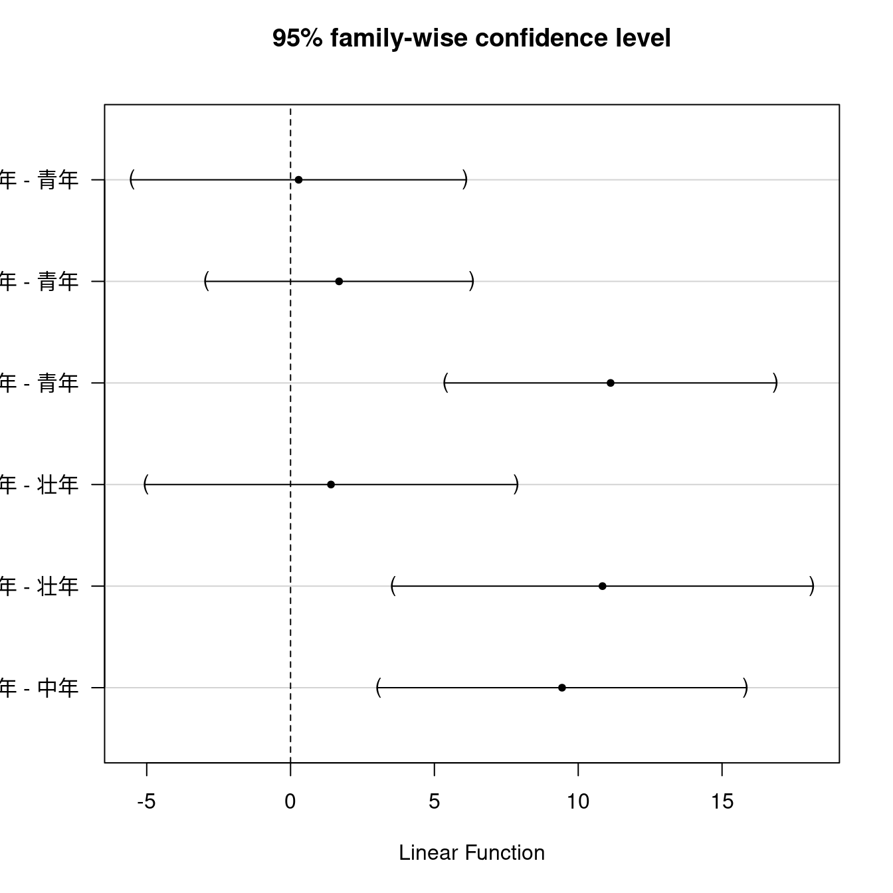
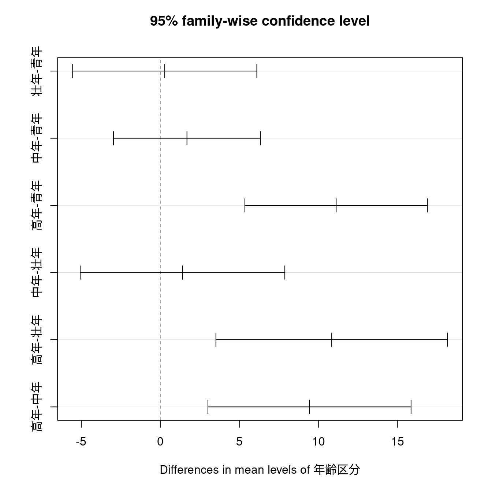

※本ページの内容はテキストの第９章に相当します
本章では分散分析（ANalysis Of VAriance）について学びます。分散分析は目的変数である量的変数が説明変数である因子によって影響されるかを調べる手法です。本章ではRcmdrで実行した場合のコードと出力結果のみを記載し、手順の記載は省略しますので詳細はテキストを参照してください。
データの読み込み
- Rcmdrのメニューから［データ］-［データセットのロード…］を実行する
- ファイルダイアログで「
外来患者ストレス.RData」ファイルを選択する - アクティブデータセットが
PatientStressになっていることを確認する
9.1 1元配置分散分析（P158）
9.1.1 正規分布の場合（P164）
統計量 - 平均 - 1元配置分散分析
AnovaModel.1 <- aov(健康統制感 ~ 年齢区分, data = PatientStress)
summary(AnovaModel.1)
with(PatientStress, RcmdrMisc::numSummary(健康統制感, groups = 年齢区分,
statistics=c('mean', 'sd')))
# 多重検定で水準間の平均値の差を確認する
local({
.Pairs <- multcomp::glht(AnovaModel.1,
linfct = multcomp::mcp(年齢区分 = "Tukey"))
print(summary(.Pairs)) # pairwise tests
print(confint(.Pairs, level=0.95)) # confidence intervals
print(multcomp::cld(.Pairs, level=0.05)) # compact letter display
old.oma <- par(oma=c(0, 5, 0, 0))
plot(confint(.Pairs))
par(old.oma)
}) Df Sum Sq Mean Sq F value Pr(>F)
年齢区分 3 4478 1493 8.53 1.79e-05 ***
Residuals 333 58275 175
---
Signif. codes: 0 '***' 0.001 '**' 0.01 '*' 0.05 '.' 0.1 ' ' 1 mean sd data:n
青年 89.57895 12.91822 171
壮年 89.86047 12.35117 43
中年 91.26582 13.76982 79
高年 100.70455 14.23161 44
Simultaneous Tests for General Linear Hypotheses
Multiple Comparisons of Means: Tukey Contrasts
Fit: aov(formula = 健康統制感 ~ 年齢区分, data = PatientStress)
Linear Hypotheses:
Estimate Std. Error t value Pr(>|t|)
壮年 - 青年 == 0 0.2815 2.2568 0.125 0.99928
中年 - 青年 == 0 1.6869 1.7996 0.937 0.77946
高年 - 青年 == 0 11.1256 2.2362 4.975 < 0.001 ***
中年 - 壮年 == 0 1.4054 2.5070 0.561 0.94188
高年 - 壮年 == 0 10.8441 2.8367 3.823 < 0.001 ***
高年 - 中年 == 0 9.4387 2.4885 3.793 0.00108 **
---
Signif. codes: 0 '***' 0.001 '**' 0.01 '*' 0.05 '.' 0.1 ' ' 1
(Adjusted p values reported -- single-step method)
Simultaneous Confidence Intervals
Multiple Comparisons of Means: Tukey Contrasts
Fit: aov(formula = 健康統制感 ~ 年齢区分, data = PatientStress)
Quantile = 2.5679
95% family-wise confidence level
Linear Hypotheses:
Estimate lwr upr
壮年 - 青年 == 0 0.2815 -5.5137 6.0767
中年 - 青年 == 0 1.6869 -2.9343 6.3080
高年 - 青年 == 0 11.1256 5.3833 16.8679
中年 - 壮年 == 0 1.4054 -5.0323 7.8430
高年 - 壮年 == 0 10.8441 3.5597 18.1285
高年 - 中年 == 0 9.4387 3.0486 15.8288
青年 壮年 中年 高年
"a" "a" "a" "b" 
多重比較
一元配置分散分析
一元配置分散分析（ANOVA）の帰無仮設\(H_0\)は「すべての水準の平均は等しい」です。したがって、対立仮説\(H_1\)は「すくなくとも一つの水準間の平均に差がある」となります。すなわち、帰無仮設\(H_0\)が棄却された場合にはどの水準間に差があるのかまでは分かりません。
一元配置分散分析
summary(AnovaModel.1) Df Sum Sq Mean Sq F value Pr(>F)
年齢区分 3 4478 1493 8.53 1.79e-05 ***
Residuals 333 58275 175
---
Signif. codes: 0 '***' 0.001 '**' 0.01 '*' 0.05 '.' 0.1 ' ' 1多重比較
どの水準間に差があるのかを確認するためには一元配置分散分析（aov()）とは別に多重比較を行う必要があります。
Simultaneous Tests for General Linear Hypotheses
Multiple Comparisons of Means: Tukey Contrasts
Fit: aov(formula = 健康統制感 ~ 年齢区分, data = PatientStress)
Linear Hypotheses:
Estimate Std. Error t value Pr(>|t|)
壮年 - 青年 == 0 0.2815 2.2568 0.125 0.99928
中年 - 青年 == 0 1.6869 1.7996 0.937 0.77945
高年 - 青年 == 0 11.1256 2.2362 4.975 < 0.001 ***
中年 - 壮年 == 0 1.4054 2.5070 0.561 0.94189
高年 - 壮年 == 0 10.8441 2.8367 3.823 0.00101 **
高年 - 中年 == 0 9.4387 2.4885 3.793 < 0.001 ***
---
Signif. codes: 0 '***' 0.001 '**' 0.01 '*' 0.05 '.' 0.1 ' ' 1
(Adjusted p values reported -- single-step method)信頼区間
各水準間の平均値の差（推定値）が求められましたので、それを元に信頼区間を求めます。
Simultaneous Confidence Intervals
Multiple Comparisons of Means: Tukey Contrasts
Fit: aov(formula = 健康統制感 ~ 年齢区分, data = PatientStress)
Quantile = 2.5693
95% family-wise confidence level
Linear Hypotheses:
Estimate lwr upr
壮年 - 青年 == 0 0.2815 -5.5168 6.0799
中年 - 青年 == 0 1.6869 -2.9368 6.3106
高年 - 青年 == 0 11.1256 5.3801 16.8711
中年 - 壮年 == 0 1.4054 -5.0358 7.8465
高年 - 壮年 == 0 10.8441 3.5557 18.1324
高年 - 中年 == 0 9.4387 3.0452 15.8323この結果をプロットするとR Commanderが出力したグラフになります。
多重比較の可視化

別の方法
R Commanderでは複数の手順を経由して多重比較を可視化していますが標準で組み込まれているTukeyHSD()関数を使うと一度で求めることが可能です。なお、R Commanderがこのような手順を踏んでいる理由は分かりません。
Tukey multiple comparisons of means
95% family-wise confidence level
Fit: aov(formula = 健康統制感 ~ 年齢区分, data = PatientStress)
$年齢区分
diff lwr upr p adj
壮年-青年 0.2815177 -5.545682 6.108717 0.9993054
中年-青年 1.6868754 -2.959815 6.333565 0.7847628
高年-青年 11.1255981 5.351554 16.899643 0.0000062
中年-壮年 1.4053577 -5.067819 7.878534 0.9436070
高年-壮年 10.8440803 3.519473 18.168688 0.0009027
高年-中年 9.4387227 3.013355 15.864090 0.0010111
9.1.2 クラスカル・ウォリス検定（P168）
統計量 - ノンパラメトリック検定 - クラスカル・ウォリス検定
car::Tapply(ストレス反応得点 ~ 年齢区分, median, na.action=na.omit,
data=PatientStress) # medians by group
kruskal.test(ストレス反応得点 ~ 年齢区分, data=PatientStress)青年 壮年 中年 高年
33.0 27.0 15.0 11.5
Kruskal-Wallis rank sum test
data: ストレス反応得点 by 年齢区分
Kruskal-Wallis chi-squared = 47.672, df = 3, p-value = 2.501e-10
多重比較（テキストの方法）
データ - アクティブデータセット - アクティブデータセットの部分集合を抽出
df1 <- subset(PatientStress, subset=年齢区分 %in% c("青年", "壮年"))
df2 <- subset(PatientStress, subset=年齢区分 %in% c("青年", "中年"))
df3 <- subset(PatientStress, subset=年齢区分 %in% c("青年", "高年"))
df4 <- subset(PatientStress, subset=年齢区分 %in% c("壮年", "中年"))
df5 <- subset(PatientStress, subset=年齢区分 %in% c("壮年", "高年"))
df6 <- subset(PatientStress, subset=年齢区分 %in% c("中年", "高年"))アクティブデータセットを切り替えながら検定を行います。有意水準はボフェローニ補正により \(p \lt \frac{0.05}{6} = 0.0083333\) となります。
統計量 - ノンパラメトリック検定 - 2標本ウィルコクソン検定
with(df1, wilcox.test(ストレス反応得点 ~ 年齢区分, alternative="two.sided"))
Wilcoxon rank sum test with continuity correction
data: ストレス反応得点 by 年齢区分
W = 4233.5, p-value = 0.1252
alternative hypothesis: true location shift is not equal to 0統計量 - ノンパラメトリック検定 - 2標本ウィルコクソン検定
with(df2, wilcox.test(ストレス反応得点 ~ 年齢区分, alternative="two.sided"))
Wilcoxon rank sum test with continuity correction
data: ストレス反応得点 by 年齢区分
W = 9563, p-value = 1.266e-07
alternative hypothesis: true location shift is not equal to 0統計量 - ノンパラメトリック検定 - 2標本ウィルコクソン検定
with(df3, wilcox.test(ストレス反応得点 ~ 年齢区分, alternative="two.sided"))
Wilcoxon rank sum test with continuity correction
data: ストレス反応得点 by 年齢区分
W = 5810.5, p-value = 2.603e-08
alternative hypothesis: true location shift is not equal to 0統計量 - ノンパラメトリック検定 - 2標本ウィルコクソン検定
with(df4, wilcox.test(ストレス反応得点 ~ 年齢区分, alternative="two.sided"))
Wilcoxon rank sum test with continuity correction
data: ストレス反応得点 by 年齢区分
W = 2149, p-value = 0.01583
alternative hypothesis: true location shift is not equal to 0統計量 - ノンパラメトリック検定 - 2標本ウィルコクソン検定
with(df5, wilcox.test(ストレス反応得点 ~ 年齢区分, alternative="two.sided"))Warning in wilcox.test.default(x = DATA[[1L]], y = DATA[[2L]], ...):
タイがあるため、正確な p 値を計算することができません
Wilcoxon rank sum test with continuity correction
data: ストレス反応得点 by 年齢区分
W = 1335.5, p-value = 0.000951
alternative hypothesis: true location shift is not equal to 0統計量 - ノンパラメトリック検定 - 2標本ウィルコクソン検定
with(df6, wilcox.test(ストレス反応得点 ~ 年齢区分, alternative="two.sided"))
Wilcoxon rank sum test with continuity correction
data: ストレス反応得点 by 年齢区分
W = 1992, p-value = 0.1804
alternative hypothesis: true location shift is not equal to 0
多重比較（コードを書く方法）
あまりエレガントでない方法
ageCalssLvls <- combn(levels(PatientStress$年齢区分), 2) |>
t() |>
as.data.frame()
ageCalssLvls V1 V2
1 青年 壮年
2 青年 中年
3 青年 高年
4 壮年 中年
5 壮年 高年
6 中年 高年あまりエレガントでない方法
Wilcoxon rank sum test with continuity correction
data: ストレス反応得点 by 年齢区分
W = 4233.5, p-value = 0.1252
alternative hypothesis: true location shift is not equal to 0
[1] "----------"
Wilcoxon rank sum test with continuity correction
data: ストレス反応得点 by 年齢区分
W = 9563, p-value = 1.266e-07
alternative hypothesis: true location shift is not equal to 0
[1] "----------"
Wilcoxon rank sum test with continuity correction
data: ストレス反応得点 by 年齢区分
W = 5810.5, p-value = 2.603e-08
alternative hypothesis: true location shift is not equal to 0
[1] "----------"
Wilcoxon rank sum test with continuity correction
data: ストレス反応得点 by 年齢区分
W = 2149, p-value = 0.01583
alternative hypothesis: true location shift is not equal to 0
[1] "----------"Warning in wilcox.test.default(x = DATA[[1L]], y = DATA[[2L]], ...):
タイがあるため、正確な p 値を計算することができません
Wilcoxon rank sum test with continuity correction
data: ストレス反応得点 by 年齢区分
W = 1335.5, p-value = 0.000951
alternative hypothesis: true location shift is not equal to 0
[1] "----------"
Wilcoxon rank sum test with continuity correction
data: ストレス反応得点 by 年齢区分
W = 1992, p-value = 0.1804
alternative hypothesis: true location shift is not equal to 0
[1] "----------"
多重比較（エレガントな方法）
（検討中）
9.2 多元配置分散分析（P170）
統計量 - 平均 - 多元配置分散分析(Linux)
AnovaModel.2 <- lm(健康統制感 ~ 性別*年齢区分,
data = PatientStress,
contrasts = list(性別=contr.sum, 年齢区分=contr.sum))
car::Anova(AnovaModel.2)
car::Tapply(健康統制感 ~ 性別 + 年齢区分, mean, na.action = na.omit,
data = PatientStress) # means
car::Tapply(健康統制感 ~ 性別 + 年齢区分, sd, na.action = na.omit,
data = PatientStress) # std. deviations
xtabs(~性別 + 年齢区分, data = PatientStress) # countsAnova Table (Type II tests)
Response: 健康統制感
Sum Sq Df F value Pr(>F)
性別 11 1 0.0660 0.7974
年齢区分 4489 3 8.5936 1.653e-05 ***
性別:年齢区分 973 3 1.8619 0.1359
Residuals 57291 329
---
Signif. codes: 0 '***' 0.001 '**' 0.01 '*' 0.05 '.' 0.1 ' ' 1 年齢区分
性別 青年 壮年 中年 高年
男 91.82000 86.94737 90.31250 97.61111
女 88.65289 92.16667 91.91489 102.84615 年齢区分
性別 青年 壮年 中年 高年
男 13.96013 13.17183 15.54689 15.03775
女 12.40478 11.41192 12.55220 13.52536 年齢区分
性別 青年 壮年 中年 高年
男 50 19 32 18
女 121 24 47 26
Rcmdrのバグ
Linux版のR Commanderにはバグがあるようで上記のコードに修正しないと動作しませんが、WindowsではR Commanderが出力する下記のコードで動作しますので修正は不要です。
統計量 - 平均 - 多元配置分散分析(Windows)
AnovaModel.2 <- lm(健康統制感 ~ 性別*年齢区分, data=PatientStress,
contrasts=list(性別 ="contr.Sum", 年齢区分 ="contr.Sum"))
car::Anova(AnovaModel.2)
car::Tapply(健康統制感 ~ 性別 + 年齢区分, mean, na.action=na.omit,
data=PatientStress) # means
car::Tapply(健康統制感 ~ 性別 + 年齢区分, sd, na.action=na.omit,
data=PatientStress) # std. deviations
xtabs(~ 性別 + 年齢区分, data=PatientStress) # counts